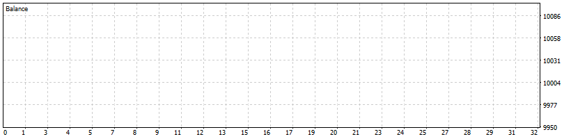

← Back to Home
AP ATR Trail Manager PRO (MT5)
Position manager for existing trades from any EA or manual entries.
ATR trailing stop, breakeven, one partial, and daily equity guard for netting and hedging accounts.
What it does
- ATR Trailing Stop: adaptive SL based on ATR(Period) × Multiplier.
- Time-Tighten: optionally tighten to a smaller ATR multiple after N minutes in the trade.
- Breakeven: move SL to BE (with optional offset) once profit in points is reached.
- One Partial Close: close a percentage of volume at a profit target; safe on netting & hedging.
- Equity Guard (Daily): optional daily loss cap (in % or money) that closes managed positions.
- Spread & Stops Safety: acts only below max spread; respects broker stop/freeze levels.
- Symbol / Magic Filters: manage this symbol only, a CSV watchlist, and/or selected magic IDs.
- Order-flow throttles: one edit per bar plus minimum seconds between edits to avoid spam.
- No entries: the EA never opens trades, it only manages open positions.
Why traders use it
- Universal: plug-in manager that works with any strategy—manual or EA.
- Adaptive: ATR trail that breathes with volatility and tightens into strength.
- Calm & safe: throttled modifications, spread checks, and no external DLLs.
- Cross-account ready: magic filtering lets you isolate exactly which positions are managed.
Suggested defaults (from screenshots)
- ATR trail: ATR(M15, 14) × 2.0, tighten to 1.5 after 20 minutes.
- Breakeven: move SL to BE at +60 points, offset 0.
- Partial: close 50% at +150 points.
- Throttle: one edit per M5 bar + 10 seconds minimum between edits.
- Max spread: 120 points (adjust per symbol/instrument).
Quick start
- Attach the EA to a chart of a symbol you trade (any timeframe).
- Decide what you want to manage:
- Set ManageOnlyThisSymbol = true to manage just this chart symbol, or
- Set it to false and fill SymbolsCSV for multi-symbol management.
- Use the magic filter mode (All / Only / Exclude) and magic list CSV to target the right positions.
- Adjust ATR / BE / Partial inputs for your instrument and risk style.
- Optionally enable the Daily Equity Guard and set % or money cap.
- Let it run. The EA will:
- Trail SL using ATR.
- Move to breakeven when the trigger hits.
- Perform one partial close at your target.
Notes & tips
- Works on both netting and hedging accounts; SL/TP and partials are handled by ticket.
- Points are broker points (e.g., 10 points = 1 pip on 5-digit FX).
- For XAU, indices, or crypto, increase MaxSpreadPoints and review ATR settings.
- To manage all symbols, set ManageOnlyThisSymbol = false and fill SymbolsCSV.
- Logs are kept concise by default; raise the log level input if you need detailed diagnostics.
FAQ
- Does it open trades? No. It only manages existing positions.
- Can I run it alongside other EAs? Yes. Use the symbol/magic filters so it manages only the tickets you intend.
- Is it safe on netting accounts? Yes. SL/TP and partial closes are done by ticket, safe for netting & hedging.
- Will it overload my broker? No. There is one-edit-per-bar plus a seconds throttle, and every change checks spread and stop level first.
- Does it handle metals/indices/crypto? Yes. Just tune ATR and MaxSpreadPoints for each symbol.
Screenshots
.png)


Version
v1.1 — initial public release (ATR trail + tighten, BE, one partial, equity guard, filters, throttles).